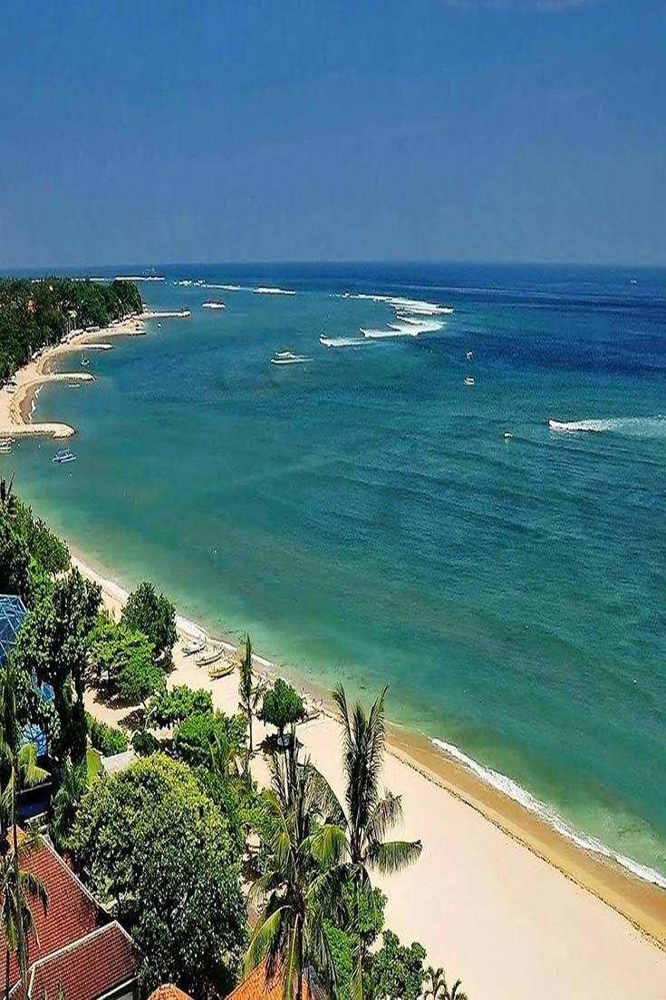
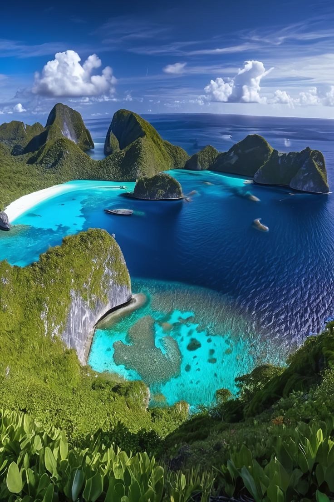
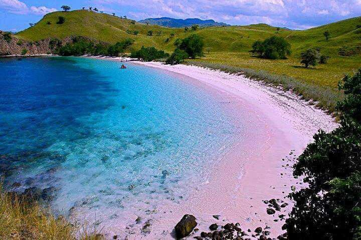
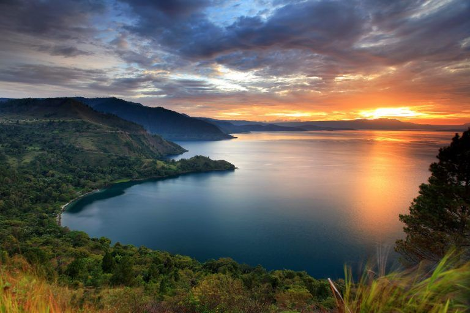

Candi Borobudur
Situs warisan dunia dengan pesona arsitektur kuno dan lanskap hijau di Magelang.
Temukan surga wisata tersembunyi dan wujudkan liburan impianmu sekarang.
Mulai PetualanganPilihan terbaik untuk petualangan alam dan budaya Anda selanjutnya.
Situs warisan dunia dengan pesona arsitektur kuno dan lanskap hijau di Magelang.

Nikmati deburan ombak dan keindahan matahari terbenam di pantai paling ikonik di Bali.

Gugusan pulau karang eksotis dengan kekayaan biota laut yang tak tertandingi.

Saksikan pemandangan matahari terbit yang magis di lanskap vulkanik paling spektakuler.

Habitat asli kadal raksasa prasejarah dengan perbukitan savana dan pantai merah jambu.

Danau vulkanik terbesar di dunia dengan keindahan Pulau Samosir di tengah-tengahnya.
Kami memberikan layanan pariwisata terbaik untuk pengalaman tak terlupakan.
Akses ke ratusan destinasi wisata tersembunyi di seluruh pelosok nusantara.
Sistem pemesanan tiket dan paket wisata dengan keamanan enkripsi tingkat tinggi.
Didampingi oleh pemandu wisata profesional yang ramah dan berpengalaman.
Cerita seru dari para petualang yang sudah menggunakan layanan kami.
"Sistem ini sangat membantu saya menemukan hidden gem di Bali. Fiturnya mudah digunakan dan infonya sangat akurat!"
"Buku tamunya responsif. Saya langsung dapat rekomendasi trip ke Bromo. Website yang sangat profesional!"
Tinggalkan jejak Anda di sistem kami.